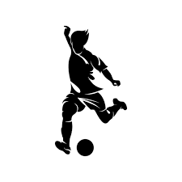
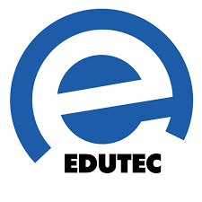

O Colégio Eron Domingues oferece uma variedade de projetos para
enriquecer a experiência educacional de seus alunos. O Edutec é um
programa inovador que visa integrar a tecnologia ao ensino,
proporcionando acesso a recursos avançados e preparando os estudantes
para os desafios do século XXI. O CELEM oferece a oportunidade de obter
certificação em línguas estrangeiras, como Libras e Espanhol,
reconhecendo a importância da proficiência linguística em um mundo
globalizado.
As inscrições para os projetos estão abertas! Para participar, os
interessados devem consultar a data de inscrição na secretaria da
escola. Não perca a oportunidade de se envolver em projetos educacionais
enriquecedores e ampliar seus horizontes. Informe-se na secretaria e
garanta sua participação!
O projeto de futsal noturno oferece aos alunos a oportunidade de participar de atividades esportivas após o horário das aulas. Além de ser uma opção de lazer, o futsal noturno promove valores importantes como disciplina, comprometimento e trabalho em equipe. Essa iniciativa contribui para a saúde física e mental dos alunos, além de proporcionar momentos de diversão e integração entre os estudantes.
O CELEM é um programa que oferece a oportunidade aos alunos de obter certificação em línguas estrangeiras, como Libras e Espanhol. O exame avalia a proficiência dos candidatos nessas línguas, reconhecendo suas habilidades de compreensão, comunicação e escrita. Para Libras, o exame avalia a capacidade do candidato de compreender e se comunicar na língua de sinais usada pela comunidade surda. Para Espanhol, o exame avalia a habilidade dos candidatos em compreender, falar, ler e escrever em espanhol, uma língua cada vez mais relevante globalmente.
O Edutec é um programa educacional inovador que tem como objetivo principal promover o uso da tecnologia na educação. Por meio do Edutec, os alunos têm acesso a uma variedade de recursos tecnológicos avançados, incluindo aplicativos educacionais, plataformas online e ferramentas de ensino digital. Essa abordagem permite uma aprendizagem mais interativa, dinâmica e personalizada, adaptando-se às necessidades individuais de cada aluno. Além disso, o Edutec capacita os professores para integrar efetivamente a tecnologia em suas práticas pedagógicas, melhorando assim a qualidade do ensino e preparando os alunos para os desafios do século XXI.
